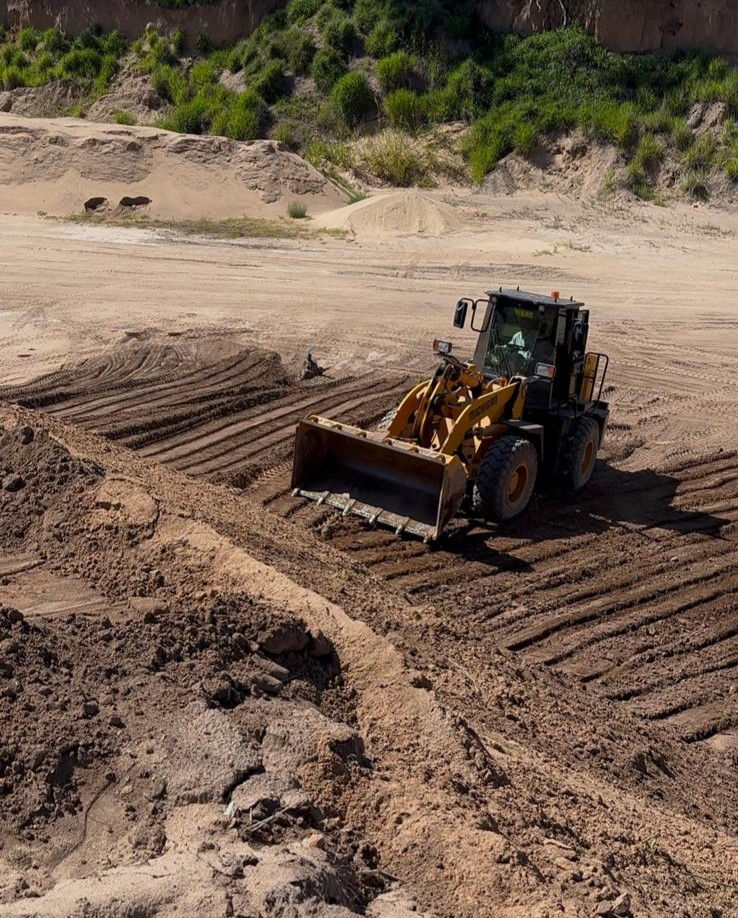
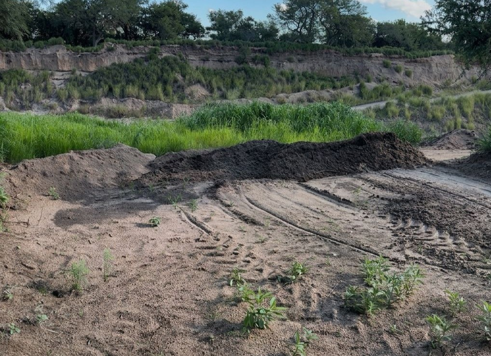

La ejecución del perfilado expuso la extrema dificultad de trabajar sobre arenas carentes de cohesión. Durante las labores, la maquinaria pesada sufrió reiteradas pérdidas de tracción y el material se deslizaba por simple acción de la gravedad al intentar suavizar la pendiente.
Como consecuencia de estas restricciones mecánicas, la Zona Media del talud debió configurarse con una inclinación aproximada de 35°, coincidiendo con el ángulo de fricción interna máximo de la arena. Esta geometría forzó a la masa de suelo a permanecer en un estado de equilibrio límite permanente, maximizando su vulnerabilidad ante la escorrentía.
El área de estudio se dividió en macro-parcelas contiguas, distribuidas a favor de la pendiente para evaluar la eficacia de distintas formulaciones:
Sector de control absoluto sin intervención para cuantificar la tasa de erosión natural.
Tratamiento operativo estándar con la dosis nominal de todos los insumos.
El nivel máximo de acorazamiento físico, combinando la hidrosiembra con una malla tridimensional anclada.
Variación orientada a simular una barrera física, maximizando la carga de fibra proyectada.
Formulación diseñada para evaluar si una mayor retención osmótica mejora la germinación frente al déficit hídrico.
A solo un mes de la siembra, una tormenta convectiva descargó 30 mm en una hora. La intensidad superó la capacidad de infiltración del talud, generando flujos de escorrentía concentrada provenientes de la zona alta externa al ensayo. Este flujo canalizado impactó sobre las parcelas, superando la tensión de corte del sustrato y provocando incisiones profundas.
👆 Navegación: Usá un dedo (o click izq.) para rotar y dos dedos (o click der.) para acercar.
⚙️ Máxima Calidad: En celulares, tocá el ícono del engranaje abajo a la derecha y activá HD.
El relevamiento aerofotogramétrico permitió contrastar la integridad estructural previa frente al daño erosivo posterior, facilitando la cuantificación volumétrica en entornos SIG.
Para neutralizar la amenaza del flujo externo, se ejecutó de urgencia una estructura de intercepción superficial (bordo de contención) aguas arriba del ensayo.

Actuando como un dique seco, desvió los excedentes hídricos y la retención del flujo aguas arriba del bordo generó un área de remanso que favoreció la infiltración profunda. Como consecuencia biológica directa, el desarrollo vegetativo se recuperó en esta franja.
Ver Resultados Finales de los Tratamientos